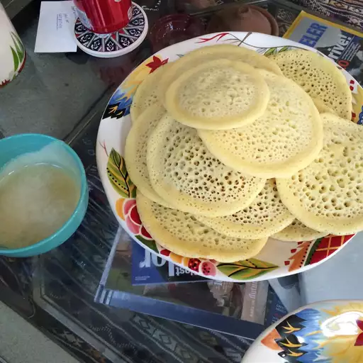

Beghrir

Discription
Beghrir or also known as Moroccan pancakes are served with honey-butter sauce. Best during Ramadan for breaking the fast or pre-dawn, but certainly great anytime.
Ingredients :
- 1 cup warm water (115 degrees F/46 degrees C)
- ½ teaspoon active dry yeast
- ½ teaspoon white sugar
- 1 cup milk
- 1 cup all-purpose flour
- 1 cup semolina flour
- 2 eggs
- 2 teaspoons baking powder
- 1 teaspoon salt
Sauce :
- 6 tablespoons butter
- ¾ cup honey
- 1 teaspoon orange-flower water, or to taste (optional)
Directions :
Step 1:
- Place the water, yeast, and sugar in a blender, and let stand without blending for 5 minutes, until the yeast softens and begins to form a creamy foam. Add the milk, flour, semolina flour, eggs, baking powder, and salt. Blend until the mixture is smooth, about 1 minute. Leave the mixture in the blender to rest for about 30 minutes.
Step 2:
- Heat a 5-inch nonstick skillet over medium-low heat. Blend the pancake mixture for about 10 seconds, to remix, and scoop 1/4 to 1/3 cup of batter into the heated skillet. Cook the beghrir until bubbles have formed and popped, and the top of the pancake is no longer shiny, about 3 minutes. Do not flip. Adjust the heat as necessary so that the bottoms of the pancakes are just starting to brown when the tops are dry. Blend the batter for 10 seconds or so after cooking 3 or 4 pancakes, to keep the batter fluffy.
Step 3:
- To make the sauce, place the butter, honey, and flower-water flavoring in a microwave-safe bowl, and microwave on High setting until the butter is melted and the honey is hot, about 1 1/2 minutes. Stir the sauce, and drizzle about 1 tablespoon over each warm pancake to serve.